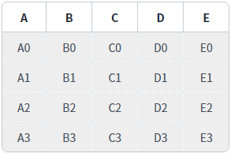
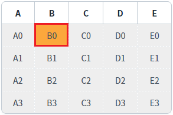
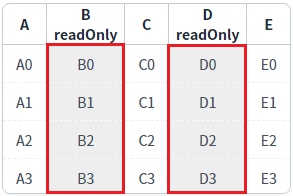
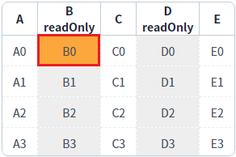
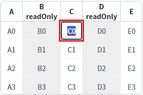
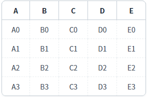
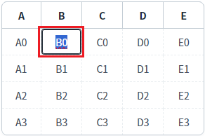
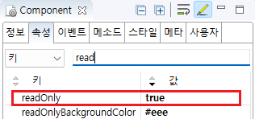
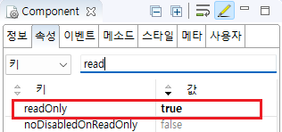

GridView의 'readOnly' 속성과 바디 컬럼의 'readOnly' 속성을 사용하여 읽기 전용 상태를 설정한 예제입니다. 'readOnly' 속성이 'true'로 설정되면 셀이 수정 모드로 변경되지 않습니다. 속성으로 설정할 수 있는 단위는 GridView 전체 또는 GridView의 컬럼입니다.
GridView의 메소드를 통해 GridView 전체, 로우(Row), 컬럼(Column), 셀(Cell) 단위로도 설정할 수 있습니다.
아래는 관련 메소드 목록입니다.
- setCellReadOnly( rowIndex , colIndex , readOnly ) : 셀 단위 설정
- setColumnReadOnly( colIndex , readOnly ) : 컬럼 단위 설정
- setGridReadOnly( readOnly ) : GridView 전체 설정
- setReadOnly( type , rowIndex , colIndex , readOnlyFlag ) : 첫 번째 인자 'type'을 통해 셀, 컬럼, 로우, GridView 전체를 설정
- setRowReadOnly( rowIndex , readOnly ) : 로우 단위 설정
'readOnly'가 설정되지 않은 GridView
속성으로 GridView의 'readOnly' 설정
속성으로 GridView 컬럼의 'readOnly' 설정
1
STEP 1: 초기 상태를 확인합니다.
예제 영역 "GridView에 'readOnly' 설정"에 구성된 GridView를 확인합니다.
GridView 전체에 'readOnly'가 설정되어 모든 셀이 수정 모드로 변경되지 않습니다.
'readOnly'가 설정된 셀의 배경색은 회색(#eee)로 설정되어 있습니다.Image 1.브라우저(Chrome) 실행 예시

2
STEP 2: 셀을 클릭합니다.
'B' 컬럼의 첫 번째 로우의 셀을 클릭합니다.
3
STEP 3: 실행된 결과를 확인합니다.
셀의 배경색은 변경되지만 수정 모드로 변경되지 않습니다.
Image 2.브라우저(Chrome) 실행 예시 - GridVeiw

1
STEP 1: 초기 상태를 확인합니다.
예제 영역 "GridView 바디 컬럼에 'readOnly' 설정"에 구성된 GridView를 확인합니다.
GridView의 'B' 컬럼과 'D' 컬럼에 'readOnly'가 설정되어 해당 컬럼의 셀은 수정 모드로 변경되지 않습니다.
'readOnly'가 설정된 셀의 배경색은 회색(#eee)로 설정되어 있습니다.Image 3.브라우저(Chrome) 실행 예시

2
STEP 2: 'readOnly'가 설정된 셀을 클릭합니다.
'B' 컬럼의 첫 번째 로우의 셀을 클릭합니다.
3
STEP 3: 실행된 결과를 확인합니다.
셀의 배경색은 변경되지만 수정 모드로 변경되지 않습니다.
Image 4.브라우저(Chrome) 실행 예시 - GridVeiw

4
STEP 4: 'readOnly'가 설정되지 않은 셀을 클릭합니다.
'C' 컬럼의 첫 번째 로우의 셀을 클릭합니다.
5
STEP 5: 실행된 결과를 확인합니다.
셀이 수정 모드로 변경됩니다.
Image 5.브라우저(Chrome) 실행 예시 - GridVeiw

1
STEP 1: 초기 상태를 확인합니다.
예제 영역 "(기본 설정) 'readOnly' 미설정"에 구성된 GridView를 확인합니다.
모든 셀이 수정 가능하며 각 셀을 클릭하면 수정 모드로 변경됩니다.
'readOnly'가 설정된 셀의 배경색은 회색(#eee)로 설정되어 있습니다.Image 6.브라우저(Chrome) 실행 예시

2
STEP 2: 셀을 클릭합니다.
'B' 컬럼의 첫 번째 로우의 셀을 클릭합니다.
3
STEP 3: 실행된 결과를 확인합니다.
셀이 수정 모드로 변경됩니다.
Image 7.브라우저(Chrome) 실행 예시 - GridVeiw

GridView의 속성을 설정합니다.
[필수] readOnly="true"
(적용 우선 순위)
GridView < column < row < cell
(옵션 설명)
false : [default] 'readOnly'를 적용하지 않습니다.
true : 'readOnly'를 적용합니다.
Image 8.웹스퀘어 스튜디오의 Component View - 속성 설정 예시

Example 1.Source
<w2:gridView readOnly="true" > <!-- 중략 --> </w2:gridView>
GridView의 바디 컬럼의 속성을 설정합니다.
[필수] readOnly="true"
(적용 우선 순위)
GridView < column < row < cell
(옵션 설명)
false : [default] 'readOnly'를 적용하지 않습니다.
true : 'readOnly'를 적용합니다.
Image 9.웹스퀘어 스튜디오의 Component View - 바디 컬럼 속성 설정 예시

Example 2.Source
<w2:gridView> <!-- 중략 --> <w2:gBody id="gBody1"> <w2:row id="row2"> <w2:column id="col_a"></w2:column> <w2:column id="col_b" readOnly="true"></w2:column> <w2:column id="col_c"></w2:column> <w2:column id="col_d" readOnly="true"></w2:column> <w2:column id="col_e"></w2:column> </w2:row> </w2:gBody> </w2:gridView>
readOnly
[body column] readOnly